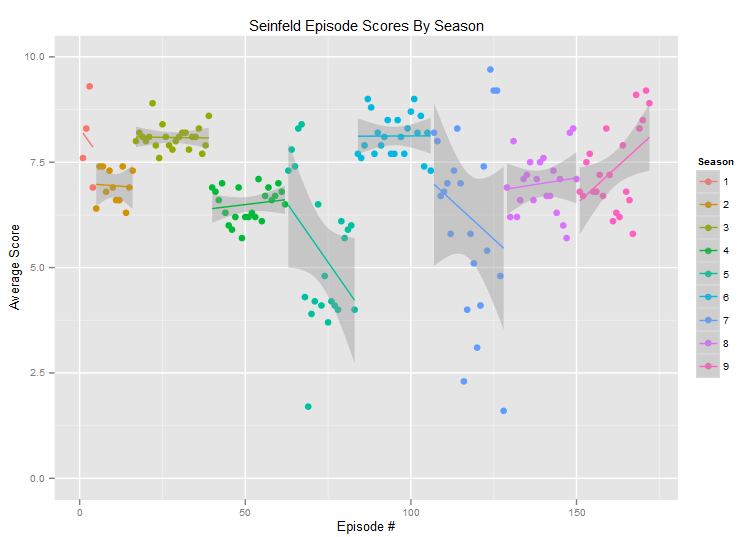

Machine Learning with TensorFlow
Lecture 1
Machine Learning
Using These Slides
↓, PgDn, n, j |
next slide |
↑, PgUp, p, k |
prev slide |
Esc |
enables ctrl+f globally |
Regression input/output
Data

x_train = np.linspace(-1, 1, 101)
y_train = 2 * x_train + np.random.randn(*x_train.shape) * 0.33
Real-world data (source)
Exercise
Ratings are from 1-10, and there are 10 episodes.
How many possible functions exist that map 10 integers to 10 integers?Here's one function: $f(x) = x, ~\forall x \in \{1, 2, ..., 10\}$
Answer: $10^{10} = 10000000000$
Model parameters

Exercise
Assume the model is $f(x) = wx$.
How many functions exist for $w\in\{1,...,10\}$?Answer: Just 10